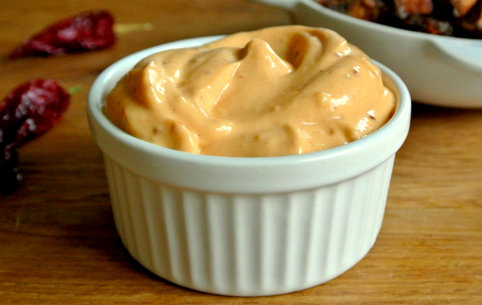
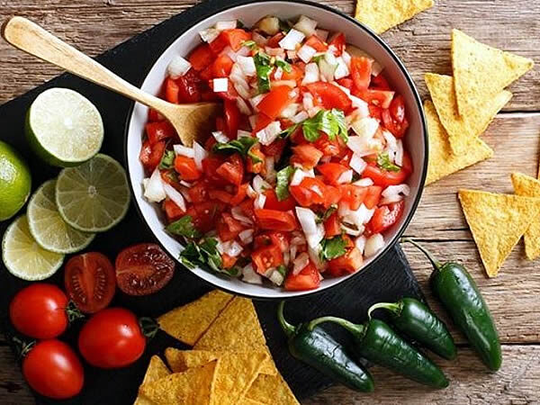
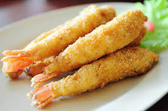

Página principal
Ingredientes
Pasos
Contacto
Tacos de camarón estilo Ensenada

Seguiremos estos pasos para realizar al final los tacos con todos ellos
Mayonesa de chipotle

Cebollas encurtidas

Pico de gallo

Camarones estilo Ensenada

Emplatar
-Servir sobre la tortilla caliente los camarones fritos y acompañar con mayonesa, col, cebollas y pico de gallo.
A DISFRUTAR!!!🌮🌮🤤🤤